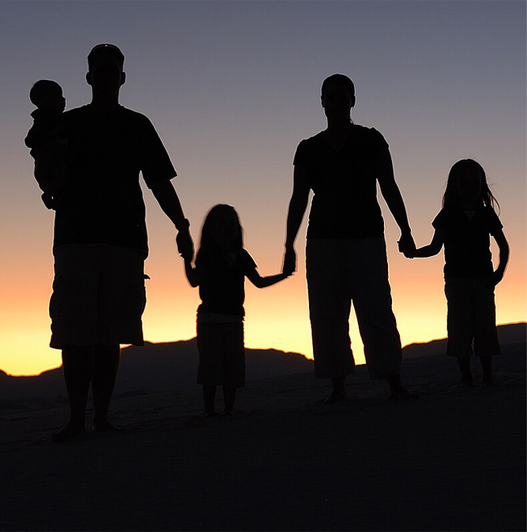

My name is Elijah Navarro, and I’m proud to be both a student and an athlete who works hard in school and on the field. Soccer has been a major part of my life for many years, and being part of a team has taught me responsibility, leadership, and how to perform under pressure. The game constantly challenges me to push past my limits, improve my skills, and support my teammates. I believe God has given me the ability to play the sport I love, and I’m grateful for the lessons He teaches me through discipline and teamwork.
Along with sports, I am currently studying web design, where I’ve been learning the fundamentals of creating and styling websites using HTML and CSS. I enjoy experimenting with layouts, colors, and images to make each page look creative and professional. Web design excites me because it mixes problem-solving with artistic expression, giving me the chance to build projects that reflect both personality and skill. I also see this as a gift from God, since my creativity allows me to express myself and work toward my goals with purpose..

Being both a soccer player and a web design student has given me balance in my life, since each one challenges me in different ways. Soccer keeps me active, competitive, and focused on teamwork, while web design allows me to practice creativity and sharpen my technical skills. My faith in God helps me stay grounded and reminds me to work hard with a positive attitude in both areas of my life. My ultimate goal is to keep growing as an athlete, a designer, and a person of faith, using the lessons I’ve learned on the field, in class, and through God’s guidance to build a bright future..